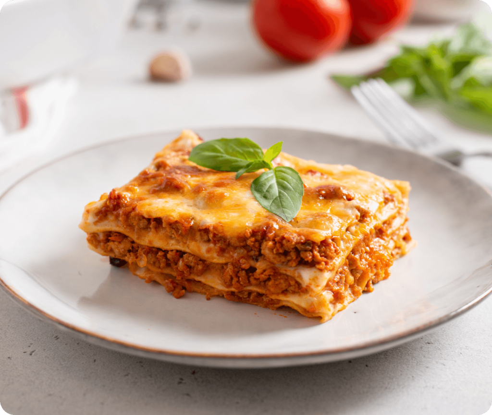

Home
Lasagna

Description
What’s layered and cheesy and saucy all over? The best Italian dish to come out of the oven, that’s what!
Try this motherload of a lasagne for a hearty weeknight meal (and totally tasty leftovers). Featuring not one, but two favorite Newman’s Own sauces for a tomato-y mashup that can’t be beat.
Ingredients
- 1 pound ground beef
- 1 pound ground pork
- 1 medium onion, chopped, about 1 cup
- 1 large clove garlic, finely chopped
- Two 24-oz. jars Newman's Own® Marinara or Tomato & Basil Pasta Sauce
- One 15-ounce container ricotta cheese
- 1 cup grated Parmesan cheese
- 1 cup frozen, chopped spinach, thawed and drained 1 cup frozen, chopped spinach, thawed and drained
- 15 fully cooked lasagna noodles (approx. 3/4 of a 16 ounce package)
- 2 cups shredded mozzarella cheese
- Finely chopped parsley (optional)
Steps
- In a large, non-stick skillet, over medium-high heat, cook ground beef and pork, stirring to break up meat. Cook until browned. Remove from skillet and drain off excess fat.
- Add onion and garlic to skillet and cook until golden. Stir in pasta sauce along with browned meat mixture; bring to a boil and cook for 2 - 3 minutes more. Remove from heat; set aside to cool for a few minutes.
- Meanwhile, in a medium bowl, combine ricotta cheese, Parmesan cheese and spinach.
- Lay 5 cooked lasagna noodles in the bottom of a greased 13 x 9 x 2 inch baking dish. Spoon about one third of meat mixture on top of lasagna noodles spreading evenly. Top with about half of ricotta mixture.
- Repeat layers twice, ending up with meat sauce on top. Cover with shredded mozzarella cheese. Bake at 350 degrees, covered for about 30 to 40 minutes or until heated through. Bake uncovered for 10 minutes more. Sprinkle with freshly chopped parsley if desired.